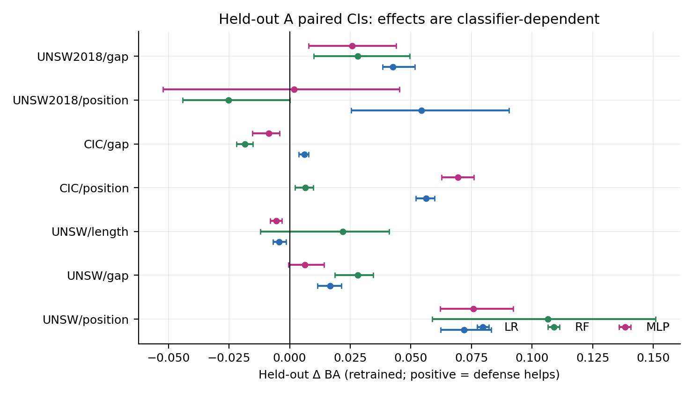
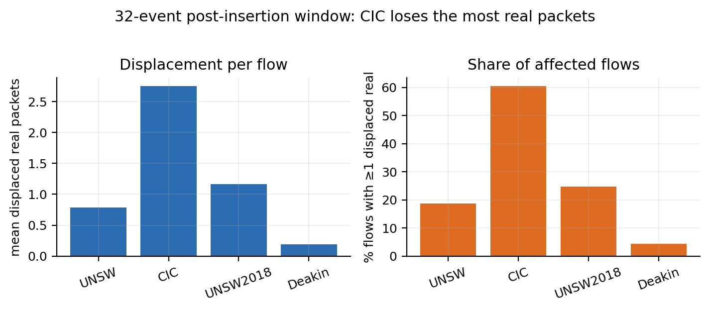
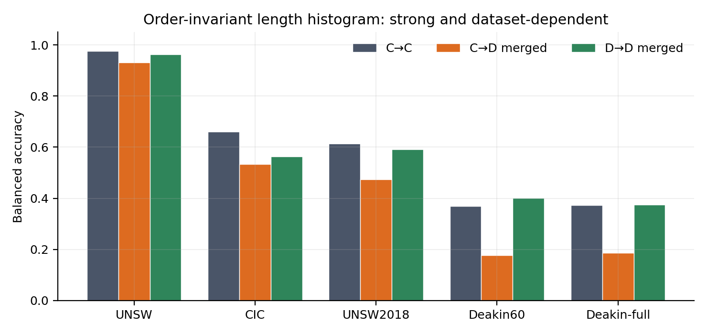
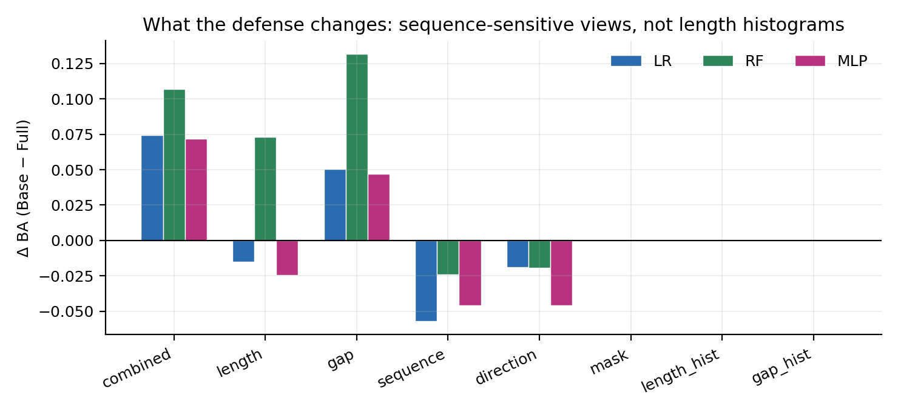

一页结论
二、研究问题的三次收敛
| 阶段 | 当时的问题 | 实验后的修正 |
|---|---|---|
| Phase 1 | 等成本下，位置/长度/gap 哪个最有效？ | 位置搜索最有效；dummy mixing 是主机制，displacement 与真实 padding 贡献小。 |
| Stage 2 早期 | 类特定 trigger code + mapping rotation 是不是核心？ | 不是。Real vs Placebo code 差异很小；位置/事件结构才是主效应。 |
| 现在 | 攻击者要多少标签、多少时间、多少历史知识，才能恢复 State 并适应？ | Periodic 的共享 State 可被少量标签恢复；Per-flow 的逐流 State 很难恢复；类别覆盖与时间窗口是硬约束。 |
三、FADE 方法与实验协议
四个耦合操作
- 真实包 padding；
- weakener dummy 插入；
- trigger 两包插入；
- 插入后截断到 32 events。
顺序不可交换：截断发生在所有插入之后，所以 trigger 位置会改变哪些真实包留在窗口内。
等成本约束
630 B / 1.5 s / ≤6 dummies
当前分解：weakener 347 B / 1.05 s / 3 + trigger 283 B / 0.45 s / 2。
所有主实验保持该预算；位置/长度/gap 搜索只改其中一项。
特征与评估
- combined：32 个 signed length（/1514）+ 32 个 log1p(min(gap,10)×1000)。
- histogram：16-bin 归一化长度直方图。
- 攻击者：LR / RF / MLP；主表为 LR，RF/MLP 用于稳健性。
- 配对 bootstrap 按天重采样；同一 flow、同一 blind、同一类别集合。
- RNG：per-flow 内容指纹 + SeedSequence；chunk/order/parallel 不变。
四、Phase 1：等成本位置搜索与机制归因
位置搜索在 v2 协议下是唯一稳定、跨数据集为正的组件；gap 只在部分数据集有效；长度搜索不稳定，held-out 出现负值。
| 组件 | UNSW | CIC | UNSW2018 | Mon |
|---|---|---|---|---|
| Position v2 Δ | 0.0518 | 0.0617 | 0.0817 | 0.0086 |
| Gap v2 Δ | 0.0155 | 0.0033 | 0.0439 | — |
| Length v2 Δ | 0.0031 | — | — | — |


机制分解
把总效应拆成 representation、displacement、dummy mixing、total：
- Dummy mixing 是主项；
- displacement 贡献小；
- representation（真实包 padding）约 0.014–0.058；
- histogram C→C：UNSW 0.977、CIC 0.660、UNSW2018 0.614、Deakin 0.369。

窗口位移
| 数据集 | 平均位移 | 受影响 flow 比例 |
|---|---|---|
| CIC | 2.75 | 60.4% |
| UNSW | 0.79 | 18.7% |
| UNSW2018 | 1.16 | 24.6% |
| Deakin | 0.19 | 4.3% |



五、Stage A：Trigger 与 Weakener 的等成本取舍
固定 5 个 dummy 事件，比较 T1_W3（2 trigger + 3 weakener）与 T0_W5（0 trigger + 5 weakener）。
| 设置 | UNSW LR | UNSW RF | UNSW MLP | CIC LR | CIC RF | CIC MLP |
|---|---|---|---|---|---|---|
| T1_W3 | 0.261 | 0.352 | 0.342 | 0.138 | 0.051 | 0.204 |
| T0_W5 | 0.967 | 0.999 | 0.995 | 0.722 | 0.851 | 0.795 |
A.1：Real vs Placebo Trigger
Placebo 保留 2 个事件、同样位置/预算，但所有类共享同一个 code、无 mapping rotation。
| 数据集 | Real → Placebo（LR） | RF | MLP |
|---|---|---|---|
| UNSW | −0.002 [−0.018, 0.018] | −0.053 [−0.098, −0.026] | −0.034 [−0.054, −0.016] |
| CIC | 0.000 [−0.007, 0.006] | −0.007 [−0.013, −0.001] | −0.006 [−0.021, 0.003] |
类特定 code + mapping 的贡献 ≤0.05；主效应不在这里。
六、位置机制：真正起作用的是 position mapping rotation
Position placebo 去掉“位置与类别的关联”，防御几乎消失；但后续 no-rotation 对照显示，静态类位置本身是可学习的，真正起作用的是 rotation。
| 数据集 | 静态类位置（no rotation） | 类位置 + rotation | 随机位置 | T0 |
|---|---|---|---|---|
| UNSW RF | 0.997 | 0.405 | 0.999 | 0.999 |
| CIC RF | 0.993 | 0.057 | 0.830 | 0.856 |
Rotation 强度 α
| α | CIC LR | CIC RF | CIC MLP | UNSW LR | UNSW RF | UNSW MLP |
|---|---|---|---|---|---|---|
| 0.00 | 0.663 | 0.830 | 0.777 | 0.931 | 0.990 | 0.978 |
| 0.25 | 0.635 | 0.819 | 0.765 | 0.911 | 0.990 | 0.970 |
| 0.50 | 0.600 | 0.818 | 0.763 | 0.891 | 0.997 | 0.956 |
| 0.75 | 0.495 | 0.662 | 0.658 | 0.839 | 0.989 | 0.894 |
| 1.00 | 0.138 | 0.057 | 0.210 | 0.263 | 0.405 | 0.376 |
非线性阈值：α≤0.5 防御弱，α=1 最强。Position-only 的 validation-aligned BA 在 K=1..8 接近 1.0，说明 rotation 是整体置换，不是信息消失。
七、K 稳定性：类内位置越稳定，防御越强
K = 每类可用位置对数量；K=1 为固定类位置，K=8 为类内随机。
| K | CIC LR | CIC RF | CIC MLP | UNSW LR | UNSW RF | UNSW MLP |
|---|---|---|---|---|---|---|
| 1 | 0.138 | 0.057 | 0.210 | 0.263 | 0.405 | 0.376 |
| 2 | 0.245 | 0.368 | 0.315 | 0.492 | 0.889 | 0.594 |
| 4 | 0.363 | 0.592 | 0.470 | 0.785 | 0.954 | 0.772 |
| 8 | 0.528 | 0.771 | 0.658 | 0.817 | 0.989 | 0.898 |
位移标准化后 K 仍单调；position-only 对齐后 K=1..8 都接近 1.0。类内位置多样性会削弱 rotation 的防御，因为攻击者可以学习类级位置分布，而不需要恢复精确映射。
八、时间序列：Fixed / Periodic / Per-flow
| policy | J(H) | T_first 0.5 | T_sustained 0.5 |
|---|---|---|---|
| Fixed | 0.965 | 0 | 0 |
| Periodic | 0.828 | 0 | 2 |
| Per-flow | 0.897 | 0 | 0 |
Periodic 在切换点出现一次性下降，但可恢复；Per-flow 的随机化反而让攻击者退回自然流量特征。这里的 T 指标必须区分首次到达与连续达标，不能混用。
九、标签校准：rotation 不是纯标签置换
在独立 calibration/eval 划分下，per-flow 的 label budget 曲线显示：
| 方法 | n=64 | n=256 | n=1024 |
|---|---|---|---|
| Permutation only | 0.43–0.50 | 0.44–0.51 | 0.44–0.51 |
| Linear probe | 0.23–0.44 | 0.62–0.88 | 0.86–0.94 |
| Fine-tune | 0.34–0.57 | 0.67–0.77 | 0.85–0.86 |
Permutation 只能恢复一部分；probe/fine-tune 在数百标签下能显著恢复。rotation 同时破坏了可迁移表示，不只是标签错位。
十、Feature Canonicalization：位置是主要可逆成分
Known-mapping + 正确序列重构下：
| 条件 | UNSW LR | CIC LR |
|---|---|---|
| No canonicalization | 0.706 | 0.585 |
| Position-only inverse | 0.877 | 0.915 |
| Code-only inverse | 0.711 | — |
| Combined inverse | 0.884 | 0.922 |
| Oracle feature regenerate | 0.880 | 0.923 |
Detector 是工程变量
| detector | 错误数 / 300 | 错误率 |
|---|---|---|
| Naive code index | 39 | 13.0% |
| Joint code + position | 1 | 0.3% |
早期 0.748 的“observable”结果主要是 naive detector 产物；joint detector 可到 0.882。不能把 detector 实现差异写成防御机制。
十一、跨数据集 / 跨模型
| 设置 | Unaware | Position-only | Combined | Oracle |
|---|---|---|---|---|
| UNSW / LR | 0.706 | 0.877 | 0.884 | 0.884 |
| CIC / LR | 0.585 | 0.915 | 0.922 | 0.923 |
| UNSW / RF | 0.868 | 0.910 | 0.962 | 0.960 |
| CIC / RF | 0.694 | 0.970 | 0.991 | 0.990 |
| UNSW / MLP | 0.838 | 0.957 | 0.958 | 0.958 |
| CIC / MLP | 0.707 | 0.974 | 0.975 | 0.976 |
LR/MLP 下 position-only 已接近 oracle；RF 的 code-position 交互随数据集和 phase 变化（UNSW 46–68%，CIC 88–93%），不能写成 RF 固有属性。
十二、Per-flow：逐流 State 推断才是瓶颈
每条 flow 独立随机 state；block-level selector 不再适用。
| 条件 | BA | Δ vs No-canon | Oracle recovery |
|---|---|---|---|
| No-canonicalization | 0.578 | — | — |
| Predicted Top-1 | 0.565 | −0.014 | −5.4% |
| Top-2 fusion | 0.605 | +0.027 | 10.6% |
| Top-6 marginalization | 0.658 | +0.079 | 31.4% |
| Confidence gate | 0.587 | +0.008 | 3.3% |
| Oracle state | 0.831 | +0.253 | 100% |
State Top-1 0.458、Top-2 0.666；Top-1 正确 flow BA 0.850，错误 flow 只有 0.440。错误 state 的逆变换会造成真实损害。
十三、强攻击者 A–F：哪些改进真正有效
| 改进 | 结论 |
|---|---|
| 概率校准 + Top-1 | 平均负增益，错误 state 造成损害 |
| Top-2 fusion | 小幅有效（+0.027，10.6%） |
| Top-6 全边缘化 | 最有效（+0.079，31.4%），候选截断损失明显 |
| 置信度门控 | 阈值迁移失效，实际回退 67–88% |
| Oracle state | 0.831，仍是上界 |
十四、总体结论
- Mapping rotation 不是不可逆信息破坏。 已知 mapping + 正确序列重构，三种 policy 都回到约 0.884。
- 位置/序列表示是主要可逆成分。 Position-only 恢复到 0.877，code-only 只有 0.711；combined 接近 oracle。
- 静态类位置可学习，rotation 才是核心。 K=1 固定类位置最强；K 增大单调削弱；类内位置稳定是防御资产。
- 防御效果取决于 State 推断成本。 Periodic 的共享 State 可被少量标签恢复；Per-flow 的逐流 State 很难恢复。
- 类别覆盖与时间窗口是硬约束。 20-day block 的 calibration pool 也不覆盖全部 8 类；n=64 常只覆盖 1 类，不能当 selector 失败。
- Finetune 平均优于 Probe，但差异主要来自类别覆盖。 Common-class 下 Probe 在 n=256 达 0.999，n=1024 达 0.980；L2/balanced/early-stop 无稳定增益。
限制
- 主实验集中在 UNSW/CIC；跨数据集结论仍有限。
- Per-flow state classifier 仍弱（Top-1 0.458），Top-6 只恢复 31%。
- 类别覆盖随时间变化，block 划分会显著影响 calibration/selector。
- 门控阈值跨 block 迁移失败，需要更稳健的校准/覆盖策略。
- 时间序列实验的 T_recovery 仍受 block 粒度限制。
下一步
- 改进 Per-flow state posterior：显式 code/position 特征、校准、置信度覆盖。
- 在 CIC / RF / MLP 上复验 Per-flow。
- 时间序列下 known-mapping vs adaptive attacker 的长期成本。
- 重新设计 block 划分，保证 calibration 类别覆盖。
- 若再研究 trigger 数量，做 T2_W1 vs T1_W3 的等成本、同位置/同 rotation 对照。
附录：产物索引
| 内容 | 路径 |
|---|---|
| Phase 1 总结 | docs/第一阶段总结_v2.md |
| Stage A / Position / K / Time | docs/第二阶段_*.md |
| Feature Canonicalization 总账 | docs/第二阶段_FeatureCanonical.md |
| 核心代码 | methods/method33.py |
| 实验脚本 | scripts/ |
| 原始结果 | artifacts/es/*.json |
| Agent 交接 | agent.md |
本页为自包含 HTML；图片使用相对路径 figures/phase1/，请与 docs/ 目录一起拷贝。